← Índice de los 69 tutes de IDA
Tute 68 · SSDT y syscalls
se conecta con: Fuera de alcance
SSDT Y COMO RESOLVEMOS LOS SYSCALLS.
Como estoy trabajando bastante con syscalls, quería dejar escrito como resolverlos para saber a qué función en kernel terminan saltando, desde una función en user.
De paso es divertido trastear un poco, y siempre se aprende.
Se que al leer esto muchos dirán bueno, pero pones un breakpoint allí en el syscall y traceas y listo (no es tan alegre el tema ya veremos jeje), igual es bueno conocer cómo trabaja la SSDT y lo que agrega conocimiento no daña.
Vayamos mirando algunos conceptos.
Que es la SSDT?
Cuando se realiza una llamada al sistema, se utiliza un índice para acceder a la función concreta que se desea utilizar, dentro de una tabla, la cual se conoce como tabla SSDT.
Por ejemplo, voy a tomar una función cualquiera de user de las tantas que acceden al sistema a través de la SSDT, tal es el caso de la función CreatePalette.
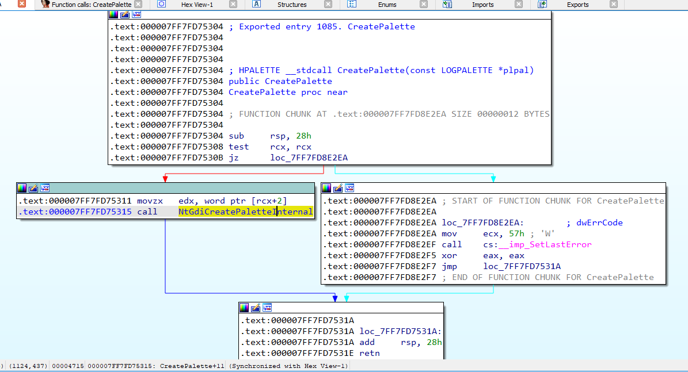
Vemos debajo que corresponde a gdi32.dll.
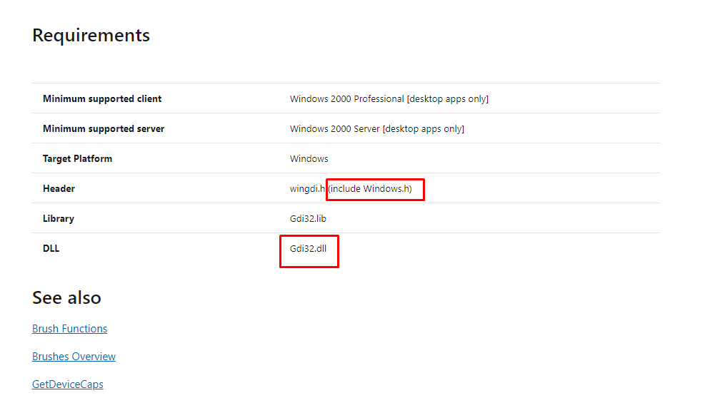
Si abrimos gdi32.dll en este caso uso una versión correspondiente a Windows 7 de 64 bits.
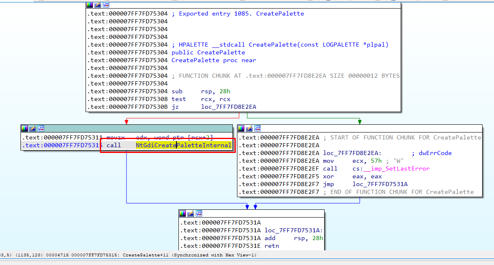
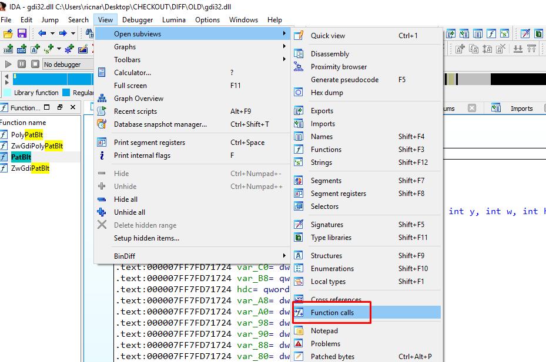
Vemos los call que realiza.
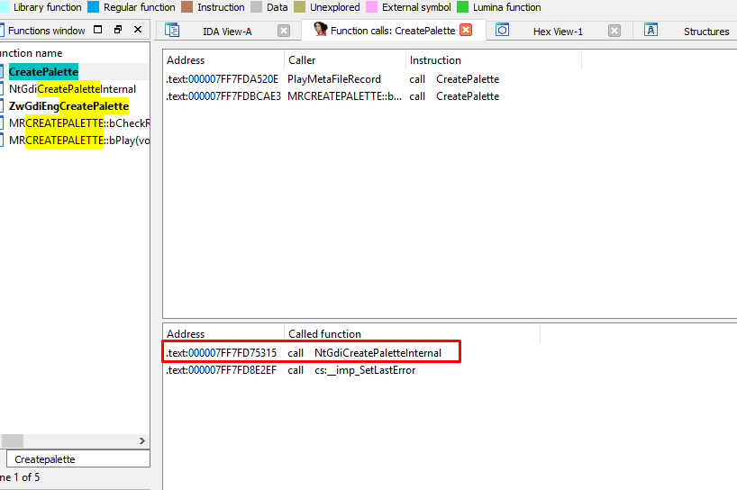
Casi siempre las funciones intermediarias llevan el prefijo ZW o NT en este caso es NT.
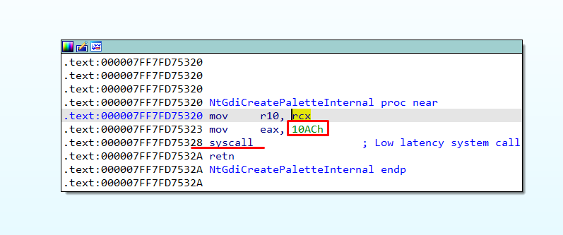
Bueno allí vemos la llamada al sistema que se realiza desde NtGdiCreatePaletteInternal, usando la instrucción syscall y con un índice en este caso 0x10ac que es el índice.
Obviamente desde un debugger en user mode no podremos entrar y tracear para continuar a ver como resuelve adonde va usando ese índice, si tenemos armado con Windbg y VMware un sistema para debugger kernel, como hemos explicado muchas veces, en este caso usando VKD ya que el target es Windows 7 de 64 bits.
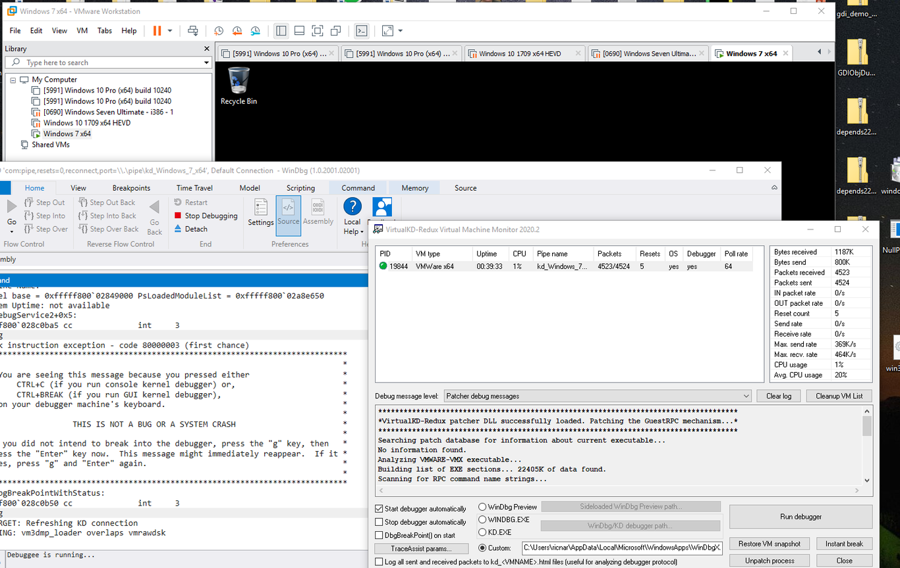
Ahí esta mi sistema de Windows 7 64 bits siendo debuggeando usando VKD REDUX y Windbg preview.
Compilare un ejecutable para llamar a la función que quiero mirar.
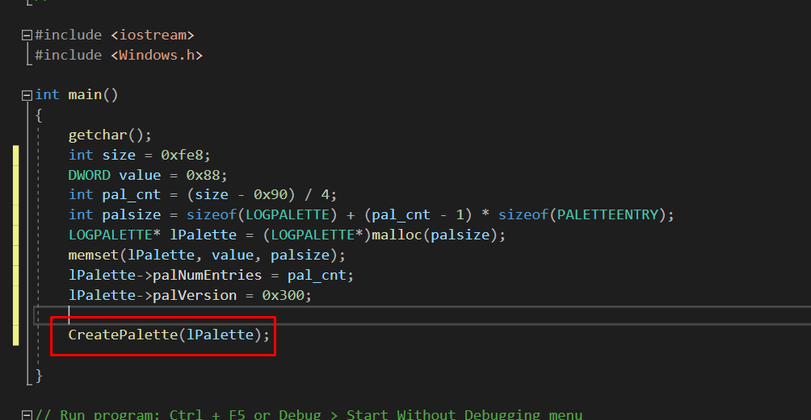
No importa mucho esto, pero el argumento es un puntero a una estructura del tipo LOGPALETTE
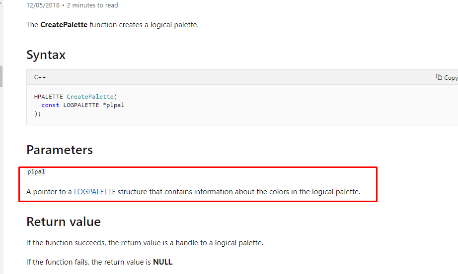
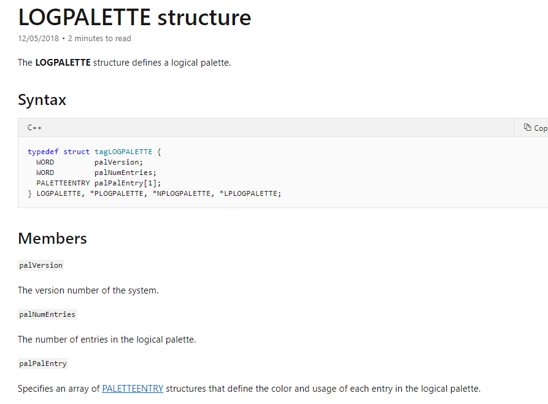
Bueno eso no importa tanto para el caso, la idea es compilarlo y si se puede, llegar a entrar al sistema y mirar la SSDT.
Lo ejecuto en mi target de Windows 7 64 bits y quedara esperando en el getchar() eso me dará oportunidad para breakear el Windbg.
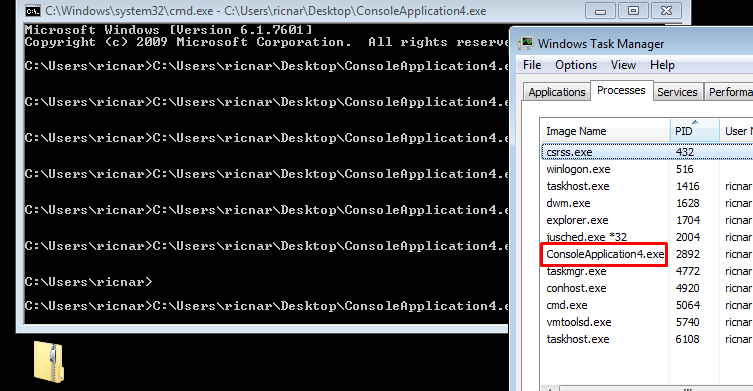
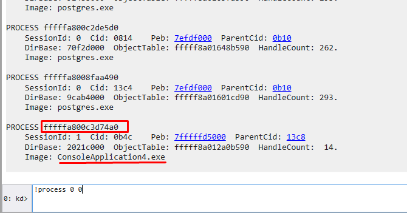
Obtengo el EPROCESS de mi proceso y ya puedo poner breakpoints en mi función para que se detenga.
Para switchear el contexto.
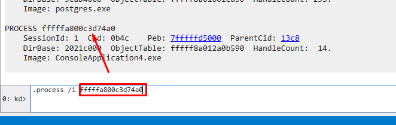
Usando el EPROCESS de mi proceso luego G y cuando se detiene luego chequeo con:
!process -1 0
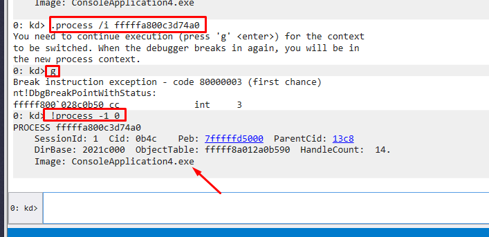
Ya estoy en mi proceso veamos la función buscada.
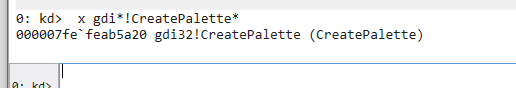
Cuando ejecuto el comando u rip me da error de acceso, eso suele ocurrir cuando uno debuggea kernel ya que el sistema no tiene toda la memoria disponible cargada, sino que hay partes de la misma que solo podemos acceder cuando las ejecuta.
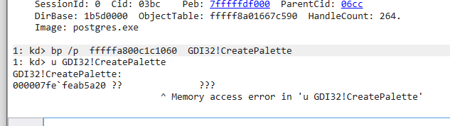
Igual como dicha parte de la memoria pertenece a un módulo cargado, sabemos que, aunque no lo muestre, en el momento que ejecute la podremos ver, así que pongo un breakpoint en la función, usando el /p con el eprocess para que pare solamente cuando ese proceso llame a la función.
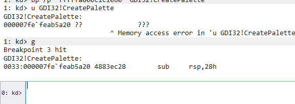
Cuando apreto ENTER en la consola en el target, para y ya veo que ahora si se puede ver el código desensamblado de la misma.
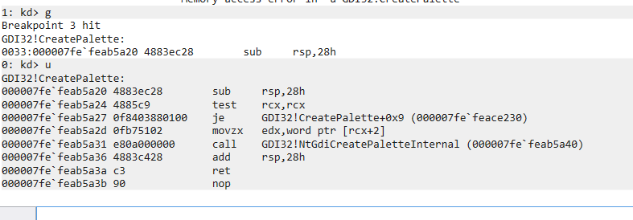
Por eso confirmo que hay partes de la memoria que no están disponibles siempre para listar y que el sistema las va cargando a medida que las necesita o ejecuta.
Traceo hasta el syscall con F11 (STEP IN).
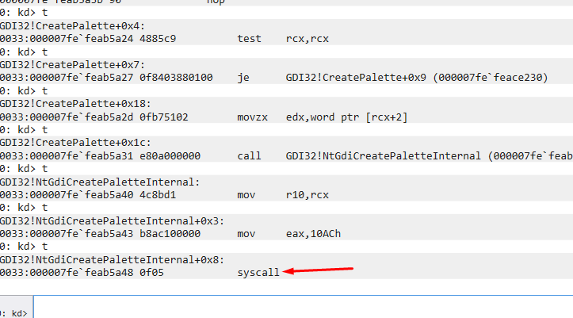
Allí estamos, la idea sería que si apreto una vez mas f11 podría entrar desde user a kernel, parando en la primera instrucción en kernel.
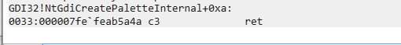
No me deja entrar a tracear aun apretando F11 pasa por encima del SYSCALL.
Entonces como podemos hacer para parar en kernel y saber a qué función termina yendo de la SSDT.
Obviamente si sabemos a qué función ira podemos poner un breakpoint en la misma, incluso ver con K las funciones por las que paso para llegar allí desde user.
La única forma que se me ocurre es tratar de listar la SSDT y ver si mediante el índice podemos sacar a que función ira, poner un breakpoint allí y cuando pare mirar el camino que realizo.
Como podemos listar la SSDT?
Primero buscaremos el módulo nt de kernel
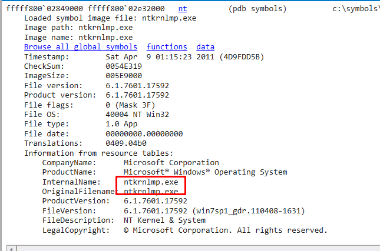
Allí vemos su nombre ntkrnlmp.exe y si lo buscamos en la maquina target no estará.
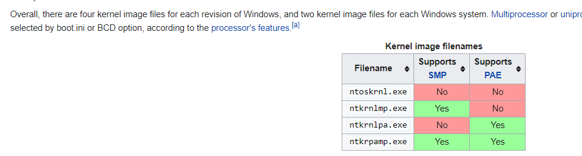
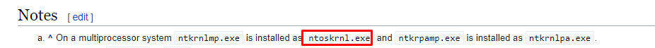
Bueno ese es el archivo a buscar, está entre los archivos ocultos en la carpeta SYSTEM32, por lo cual hay que cambiar la visibilidad para que se puedan mostrar los mismos en las opciones de carpeta.
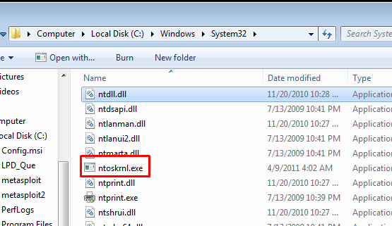
Lo copiare a la maquina principal para abrir en IDA.
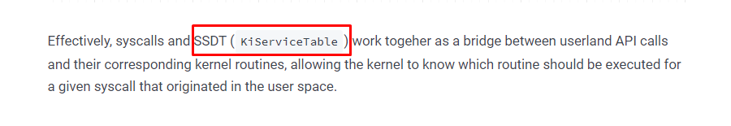
Si busco en NAMES en IDA veo que esta KiServiceTable.
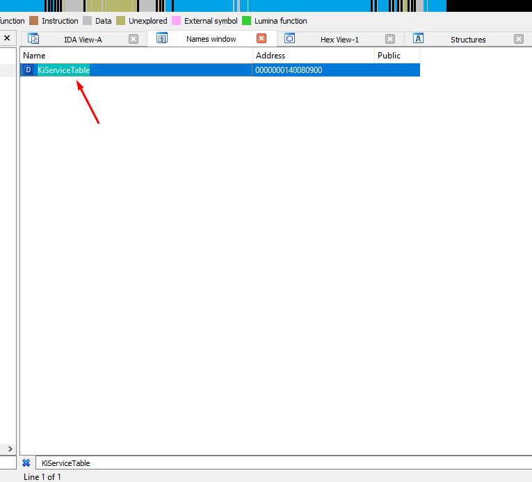
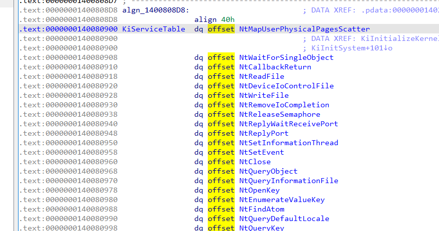
Bueno ahí está la SSDT.
Veamos si coincide hay una pagina
https://github.com/j00ru/windows-syscalls
Que se puede listar todos los índices de cada función de user, también veo que hay dos tablas una correspondiente a ntoskrl y otra wink32 y para cada una de ellos la versión de 64 y 32 bits.
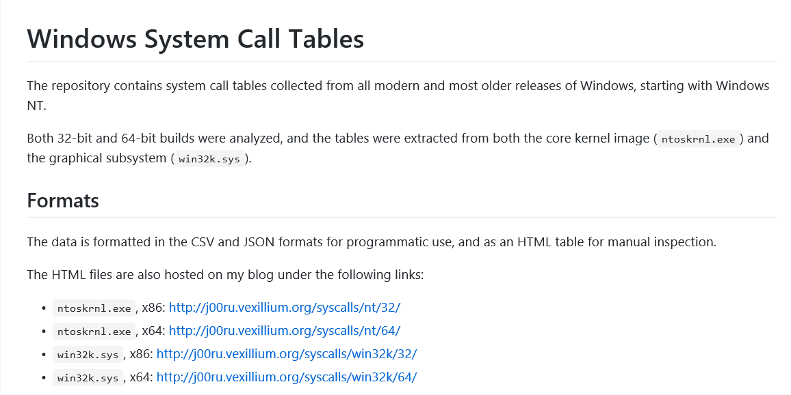
Vayamos por ahora a la de ntoskrnl.
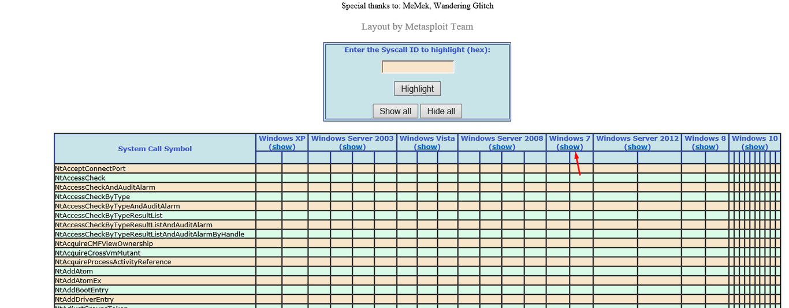
Vemos que como todo array empieza con el índice cero
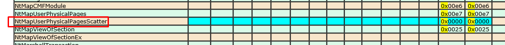
La primera entrada corresponde a la función de user NtMapUserPhysicalScatter y en IDA vemos la función correspondiente en kernel.
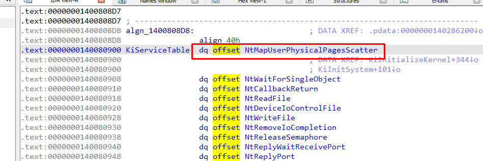
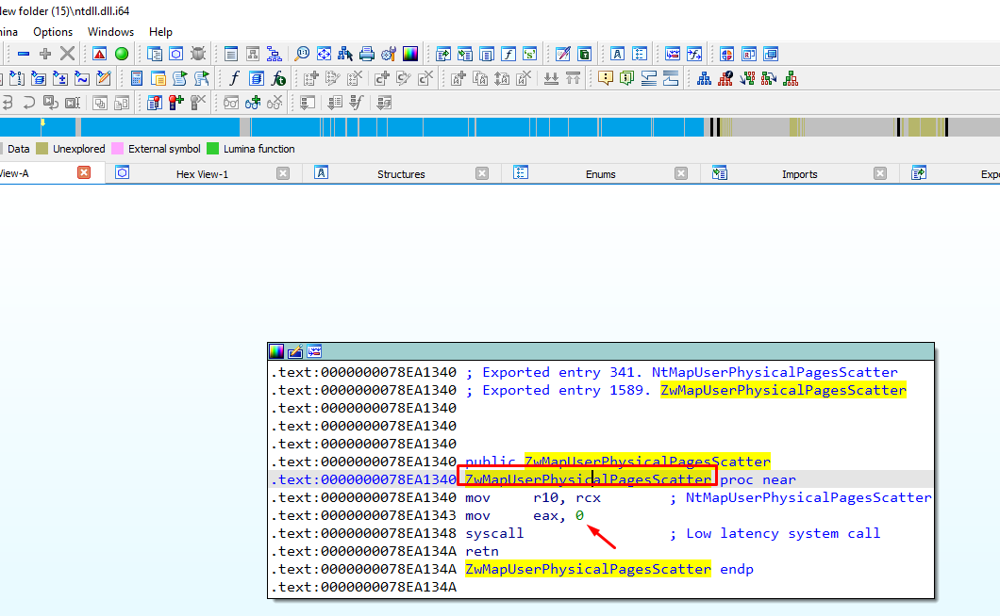
Bueno si veo en la ntdll de user veo la llamada en este caso la llama con ZW en vez de NT pero es la misma función y con el índice cero.
Vuelvo a arrancar el ejecutable en el target y cuando queda detenido en la consola hago break en el Windbg y switcheo el contexto. (no repetiré como nuevamente)
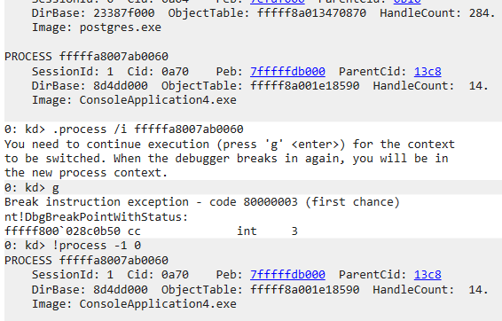
Puedo ver en windbg que hay dos SSDT una para ntoskrnl que acabamos de ver y otra para win32ksys.
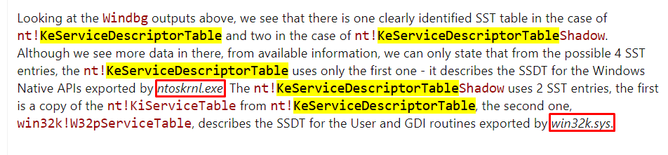
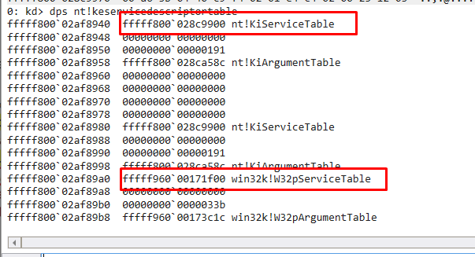
Allí están las 2 si abrimos una copia de win32ksys copiado de la maquina target en IDA veremos esta segunda SSDT.
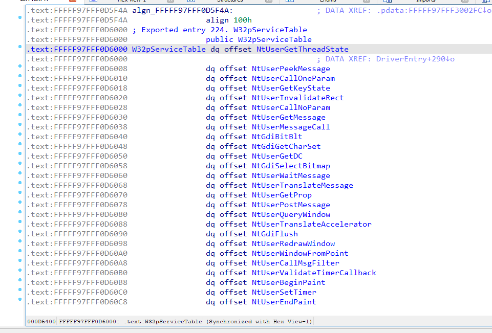
También vimos que la pagina donde lista tiene otra página separada para esta otra SDDT.
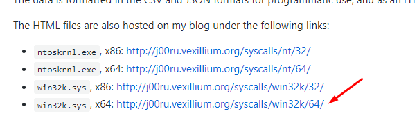
Vemos que el índice mas bajo de esta tabla segunda tabla es 0x1000, ahora como podemos convertir la información que nos lista Windbg para obtener la dirección donde saltaría en cualquiera de ambas tablas, ya sabemos que índices menores que 0x1000 corresponden a la tabla de ntoskrnl y mayores a la de win32k.
En 64 bits la cosa es un poco mas compleja (en 32 bits es mucho más sencillo luego compararemos)
Veamos como podemos hallar en la primera tabla de ntoskrnl la dirección de la primera función, el método se aplica a cualquier función de cualquiera de las dos tablas.
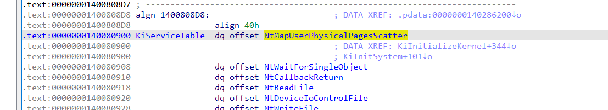
Bueno esa es la primera entrada de esta SSDT correspondiente al índice 0, si hago doble click en IDA me muestra la función donde saltaría.
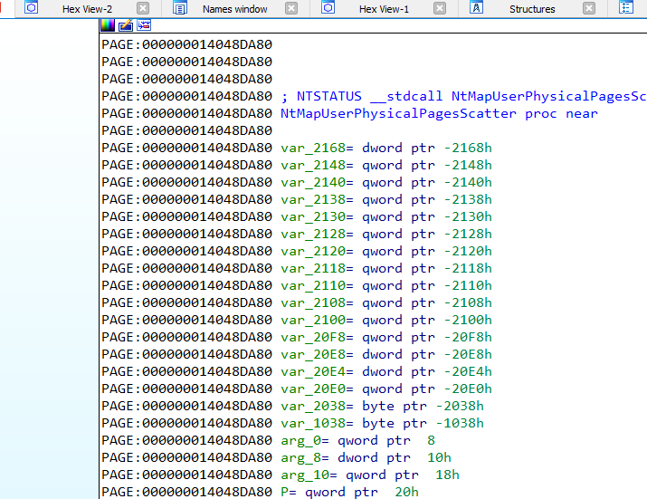
Obviamente sabiendo el nombre, podríamos ver en Windbg la dirección, lo haremos para chequear si nuestras cuentas dan bien, pero lo hallaremos calculando.
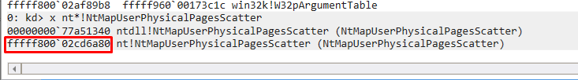
Esa es la dirección veamos lo que muestra Windbg en la tabla en el primer campo.
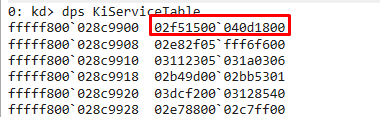
Como calculamos desde allí la dirección de la función, veamos.
Debemos user la parte baja o sea en este caso 0x40d1800
Veamos como se hace:
Bits 4-31 correspond to the relative address to the base of the nt!KiServiceTable. Bits 0-3 are related to the number of arguments and will not be used here.
To obtain the function address, we shift the value 4 bits to the right and add the result to the table base linear address:
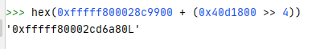
Así que con la parte baja de la entrada haciendo shift con 4 y sumándole la base de la tabla llegamos a obtener la dirección de la función.
hex(0xfffff800028c9900 + (0x40d1800 >> 4))
'0xfffff80002cd6a80L'
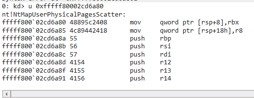
Coincide
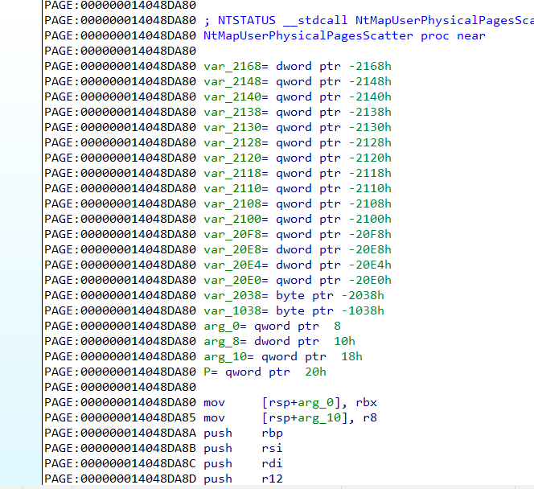
Ahora esto parece fácil porque es la primera entrada veamos si lo podemos propagar para cualquier entrada.
Tomemos un numero arbitrario de índice digamos el 0x40.
Con este comando obtendremos a partir del incide directamente la parte baja que necesitamos
dd /c 1 nt!KiServiceTable L(INDICE +1)
Ese comando listará las entradas y la última que muestre será la buscada, hay que sumarles uno al índice porque eso le dice a Windbg cuantas entradas listar y para listar la primera no le podemos pasar cero, siempre hay que sumarle uno, en el caso que vimos anteriormente, para el índice 0.
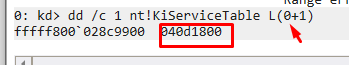
Para el caso 0x40.
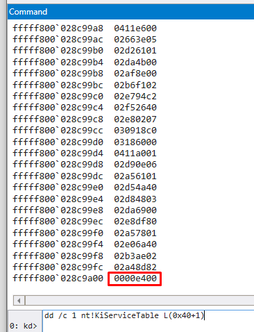
Veamos a que función corresponde.
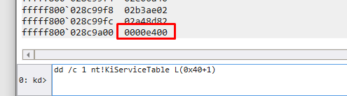
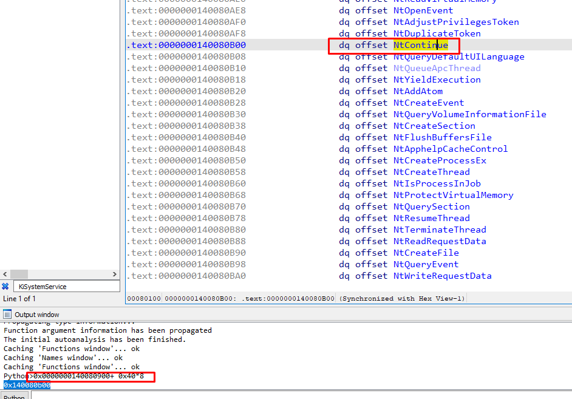
En ida yendo a la entrada 0x40 ya que es un array de punteros de 8 bytes hay que multiplicar por 8 y sumar la base, vemos que corresponde a NtContinue.
En la tabla correspondiente a ntoskrnl vemos que coincide.
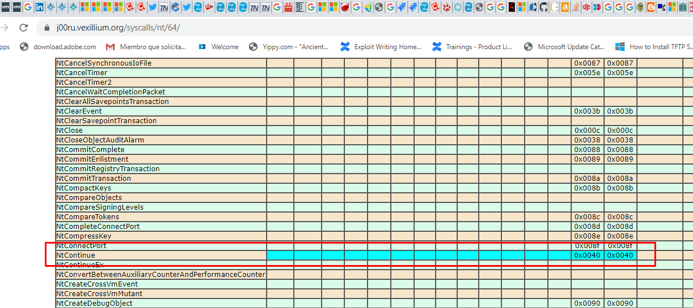
Veamos en windbg.
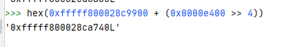
Coincide perfectamente.
En 32 bits no es tan problemático porque no hay que realizar ninguna cuenta.
Vemos que se accede en la tabla directamente sin hacer cuentas a la dirección de la función buscada.
Ahora tratemos de aplicar lo mismo a la otra tabla, la de win32k.sys que esta en la otra pagina y con nuestro ejemplo, en el que aún estamos detenidos.
Recordemos que en esta otra tabla el mínimo índice era 0x1000 tenemos que tener en cuenta eso, listemos la tabla en windbg.
En IDA multiplicamos por 8 sin olvidar de restarle los 0x1000 al índice.
En windbg buscamos la tabla.
Como esta pertenece a win32k buscamos allí.
Veamos si podemos aplicar la formula y ahora hay que sumarle la base de esta tabla.
Me da esa dirección que puedo comprobar en Windbg.
Vemos que, aunque no pueda listarla como la vez anterior, dicha dirección corresponde a la función encontrada.
Le pondré un breakpoint.
Le doy G y corro el ejecutable en el target y parara.
Podría haber usado el eprocess para filtrar, pero no es tan común que se llame a esta función de kernel muy seguido, así que igual paro siendo llamada por mi proceso ahí vemos que estamos en el mismo.
Este era nuestro objetivo y lo logramos obtener la función donde saltaría desde user, usando el índice para calcularla.
Chusmeemos un poco mas.
Allí vemos el call stack como se origino en la llamada de user CreatePallete, luego entra en user a NtGdiCreatePaletteInternal, veamos donde sigue cuando entra en el syscall en el IDA.
Buscando en los names lo encontramos en IDA
Allí esta la llamada en ese call r10 y retornaría al INC ese.
Un poco más arriba están las tablas, y realiza las operaciones que vimos hasta que resuelve la entrada y salta en el CALL R10.
Por supuesto esto pertenece a ntoskrl desde allí luego decide que tabla usar si su propia tabla o la de win32ksys.
¿Ese es el inicio de la función, podremos poner un breakpoint allí?
Arranco el proceso y switcheo el contexto cuando está detenido
Espero que no se rompa todo veamos.
Glup por eso no deja entrar traceando desde SYSENTER jeje porque se rompe todo el sistema y realiza un BSOD.
Bueno de cualquier manera ya sabemos como hallar la función adonde salta desde user a kernel, tanto calculándola como usando el IDA, así que bueno, cuando necesitemos ya vimos que podemos hallarla y poner un breakpoint en la función donde salta y seguir desde allí, evidentemente parar antes detiene muchos procesos importante que la maquina no puede manejar y BSOD.
Pero logramos nuestro objetivo entender las tablas y saber calcular adonde saltara.
Hasta la próxima
Ricardo Narvaja